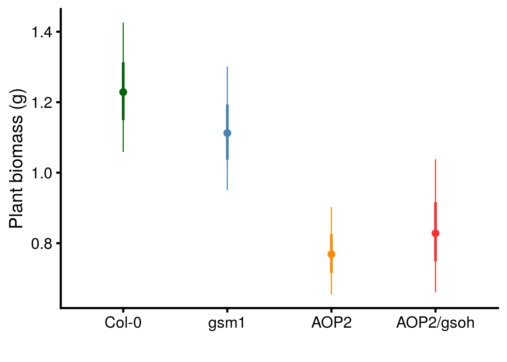

Last updated: 2020-06-22
Checks: 6 1
Knit directory: genes-to-foodweb-stability/
This reproducible R Markdown analysis was created with workflowr (version 1.6.0). The Checks tab describes the reproducibility checks that were applied when the results were created. The Past versions tab lists the development history.
The R Markdown is untracked by Git. To know which version of the R Markdown file created these results, you’ll want to first commit it to the Git repo. If you’re still working on the analysis, you can ignore this warning. When you’re finished, you can run wflow_publish to commit the R Markdown file and build the HTML.
Great job! The global environment was empty. Objects defined in the global environment can affect the analysis in your R Markdown file in unknown ways. For reproduciblity it’s best to always run the code in an empty environment.
The command set.seed(20200205) was run prior to running the code in the R Markdown file. Setting a seed ensures that any results that rely on randomness, e.g. subsampling or permutations, are reproducible.
Great job! Recording the operating system, R version, and package versions is critical for reproducibility.
Nice! There were no cached chunks for this analysis, so you can be confident that you successfully produced the results during this run.
Great job! Using relative paths to the files within your workflowr project makes it easier to run your code on other machines.
Great! You are using Git for version control. Tracking code development and connecting the code version to the results is critical for reproducibility. The version displayed above was the version of the Git repository at the time these results were generated.
Note that you need to be careful to ensure that all relevant files for the analysis have been committed to Git prior to generating the results (you can use wflow_publish or wflow_git_commit). workflowr only checks the R Markdown file, but you know if there are other scripts or data files that it depends on. Below is the status of the Git repository when the results were generated:
Ignored files:
Ignored: .Rhistory
Ignored: .Rproj.user/
Ignored: analysis/structural-stability_cache/
Ignored: code/.Rhistory
Untracked files:
Untracked: analysis/critical-transitions.Rmd
Untracked: analysis/plant-growth-no-insects.Rmd
Untracked: analysis/structural-stability.Rmd
Untracked: code/glm-ftest.R
Untracked: code/plot-feasibility-domain.R
Untracked: code/prep-time-series.R
Untracked: code/simulate-community-dynamics.R
Untracked: code/temperature-structural-stability-fig.R
Untracked: data/ExperimentPlantBiomass.csv
Untracked: data/PreExperimentNoInsectsPlantBiomass.csv
Untracked: data/arabidopsis_clean_df.csv
Untracked: figures/
Untracked: morgue/
Untracked: output/critical-transitions.RData
Untracked: output/full.mv.norm.brm.rds
Untracked: output/geno.rich_model.brm.rds
Untracked: output/plant-growth-no-insects.RData
Untracked: output/reduced.1.brm.rds
Untracked: output/reduced.2.brm.rds
Untracked: output/reduced.3.brm.rds
Untracked: output/reduced.4.brm.rds
Untracked: output/reduced.5.brm.rds
Untracked: output/reduced.6.brm.rds
Untracked: output/reduced.7.brm.rds
Untracked: output/reduced.8.brm.rds
Untracked: output/structural-stability.RData
Untracked: output/timeseries_df.csv
Untracked: rich-geno-critical-transition.pdf
Untracked: rich-structural-stability-R.pdf
Untracked: rich-temporal-states-grey.pdf
Unstaged changes:
Modified: analysis/index.Rmd
Modified: code/README.md
Modified: data/README.md
Modified: output/README.md
Note that any generated files, e.g. HTML, png, CSS, etc., are not included in this status report because it is ok for generated content to have uncommitted changes.
There are no past versions. Publish this analysis with wflow_publish() to start tracking its development.
# load data
ChamberNoInsectsDF <- read_csv("data/PreExperimentNoInsectsPlantBiomass.csv") %>%
mutate(Cage = as.character(Cage),
Pot = as.character(Pot))
# conduct analyses at cage level
CageLevelBiomass <- ChamberNoInsectsDF %>%
# sum biomass across both pots
group_by(Cage, Temperature, Richness, Composition, Col, gsm1, AOP2, AOP2.gsoh) %>%
summarise_at(vars(Biomass_g), list(sum)) %>%
# tidy data
ungroup() %>%
select(cage = Cage, temp = Temperature, rich = Richness, com = Composition, Col, gsm1, AOP2, AOP2.gsoh, Biomass_g) %>%
# adjust temp and rich so effect of +1 C is comparable to +1 genotype
mutate(temp = ifelse(temp == "20 C", 0, 3),
rich = rich - 1)
# source in ANOVA GLM for adjusted F-tests
source('code/glm-ftest.R')An Analysis of deviance on a GLM with a gaussian error distribution is equivalent to ANOVA. However, unadjusted F-tests are inappropriate because all terms are tested against residual variation rather than the intended error level (e.g. com for rich). The analysis below is just to prove this equivalence. I’m doing this so I can use the same function glm.ftest.v2 for the ANOVA in the following section.
glm.ftest.v2(
model = glm(data = CageLevelBiomass,
family = gaussian(link = "identity"),
# logging improves residual distribution
formula = log(Biomass_g) ~ temp + rich + com + temp:rich + temp:com),
test.formula = list(c("temp","temp:com"),
c("rich","com"),
c("temp:rich","temp:com")))[[1]] term df dev mean_dev F P
1 temp 1 6.002 6.002 75.51 0.0000
2 rich 1 0.038 0.038 0.48 0.4948
3 com 9 3.396 0.377 4.75 0.0003
4 temp:rich 1 0.027 0.027 0.34 0.5656
5 temp:com 9 0.826 0.092 1.15 0.3511
6 Residuals 38 3.021 0.079 NA NAanova(aov(log(Biomass_g) ~ temp + rich + com + temp:rich + temp:com, CageLevelBiomass))Analysis of Variance Table
Response: log(Biomass_g)
Df Sum Sq Mean Sq F value Pr(>F)
temp 1 6.0019 6.0019 75.5075 1.455e-10 ***
rich 1 0.0378 0.0378 0.4753 0.4947633
com 9 3.3961 0.3773 4.7473 0.0002907 ***
temp:rich 1 0.0267 0.0267 0.3360 0.5655796
temp:com 9 0.8256 0.0917 1.1540 0.3511397
Residuals 38 3.0205 0.0795
---
Signif. codes: 0 '***' 0.001 '**' 0.01 '*' 0.05 '.' 0.1 ' ' 1# fit ANOVA
biomass_noinsects_glmf <- glm.ftest.v2(
model = glm(data = CageLevelBiomass,
family = gaussian(link = "identity"),
# logging improves residual distribution
formula = log(Biomass_g) ~ temp + rich + com + temp:rich + temp:com),
test.formula = list(c("temp","temp:com"),
c("rich","com"),
c("temp:rich","temp:com")))[[3]] %>%
# tidy table
select(Source = treatment,
`df (Source)` = num_df,
`df (Error)` = den_df,
Deviance = deviance,
`Mean Deviance` = mean_deviance,
F = F, P = P, Error = error)
# reproduce table S4 in Supplementary Materials
biomass_noinsects_glmf %>%
kable(., caption = "Analysis of variance for plant biomass (log transformed) in the absence of insects.", booktabs = T) %>%
kable_styling(latex_options = c("striped", "hold_position"))| Source | df (Source) | df (Error) | Deviance | Mean Deviance | F | P | Error |
|---|---|---|---|---|---|---|---|
| temp | 1 | 9 | 6.00 | 6.00 | 65.429 | <0.001 | temp:com |
| rich | 1 | 9 | 0.04 | 0.04 | 0.100 | 0.759 | com |
| temp:rich | 1 | 9 | 0.03 | 0.03 | 0.291 | 0.603 | temp:com |
# calculate 95% confidence intervals with `com` as the cluster level
geno_biomass_CI_raw <- conf_int(
glm(data = CageLevelBiomass,
family = gaussian(link = "identity"),
formula = log(Biomass_g) ~ -1 + temp + Col + gsm1 + AOP2 + AOP2.gsoh),
vcov = "CR2",
test = "naive-t",
coefs = c("Col","gsm1","AOP2","AOP2.gsoh"),
cluster = CageLevelBiomass$com) %>%
data.frame() %>%
rownames_to_column(var = "term")
# note that I back transform to original scale for plotting
# plot on original scale
geno_biomass_CI_raw %>%
mutate(term = factor(term,
levels = c("Col","gsm1","AOP2","AOP2.gsoh"))) %>%
ggplot(aes(x = term, y = exp(beta), color = term)) +
geom_point(size = 3) +
geom_linerange(aes(ymax = exp(CI_U), ymin = exp(CI_L))) +
geom_linerange(aes(ymin = exp(beta - SE), ymax = exp(beta + SE)), size = 1.25) +
scale_y_continuous(name = "Plant biomass (g)") +
scale_x_discrete(labels = c("Col-0","gsm1","AOP2","AOP2/gsoh")) +
scale_color_manual(values = c("darkgreen","steelblue","darkorange","firebrick1"), guide = F) +
xlab("") +
theme_cowplot(font_size = 18, line_size = 1)
Write out an .RData file to use for creating the Supplementary Material Results.
save.image(file = "output/plant-growth-no-insects.RData")
sessionInfo()R version 3.6.3 (2020-02-29)
Platform: x86_64-pc-linux-gnu (64-bit)
Running under: Ubuntu 16.04.6 LTS
Matrix products: default
BLAS: /usr/lib/libblas/libblas.so.3.6.0
LAPACK: /usr/lib/lapack/liblapack.so.3.6.0
locale:
[1] LC_CTYPE=en_US.UTF-8 LC_NUMERIC=C
[3] LC_TIME=en_US.UTF-8 LC_COLLATE=en_US.UTF-8
[5] LC_MONETARY=en_US.UTF-8 LC_MESSAGES=en_US.UTF-8
[7] LC_PAPER=en_US.UTF-8 LC_NAME=C
[9] LC_ADDRESS=C LC_TELEPHONE=C
[11] LC_MEASUREMENT=en_US.UTF-8 LC_IDENTIFICATION=C
attached base packages:
[1] stats graphics grDevices utils datasets methods base
other attached packages:
[1] cowplot_1.0.0 clubSandwich_0.3.5 kableExtra_1.1.0 forcats_0.4.0
[5] stringr_1.4.0 dplyr_0.8.3 purrr_0.3.3 readr_1.3.1
[9] tidyr_1.0.2 tibble_2.1.3 ggplot2_3.2.1 tidyverse_1.3.0
loaded via a namespace (and not attached):
[1] Rcpp_1.0.2 lubridate_1.7.4 lattice_0.20-38 zoo_1.8-6
[5] assertthat_0.2.1 rprojroot_1.3-2 digest_0.6.20 R6_2.4.0
[9] cellranger_1.1.0 backports_1.1.4 reprex_0.3.0 evaluate_0.14
[13] httr_1.4.1 highr_0.8 pillar_1.4.2 rlang_0.4.4
[17] lazyeval_0.2.2 readxl_1.3.1 rstudioapi_0.10 rmarkdown_2.0
[21] labeling_0.3 webshot_0.5.1 munsell_0.5.0 broom_0.5.2
[25] compiler_3.6.3 httpuv_1.5.1 modelr_0.1.5 xfun_0.9
[29] pkgconfig_2.0.2 htmltools_0.3.6 tidyselect_0.2.5 workflowr_1.6.0
[33] viridisLite_0.3.0 crayon_1.3.4 dbplyr_1.4.2 withr_2.1.2
[37] later_1.0.0 grid_3.6.3 nlme_3.1-140 jsonlite_1.6
[41] gtable_0.3.0 lifecycle_0.1.0 DBI_1.0.0 git2r_0.26.1
[45] magrittr_1.5 scales_1.0.0 cli_1.1.0 stringi_1.4.3
[49] fs_1.3.1 promises_1.0.1 xml2_1.2.2 generics_0.0.2
[53] vctrs_0.2.2 sandwich_2.5-1 tools_3.6.3 glue_1.3.1
[57] hms_0.5.3 yaml_2.2.0 colorspace_1.4-1 rvest_0.3.5
[61] knitr_1.26 haven_2.2.0